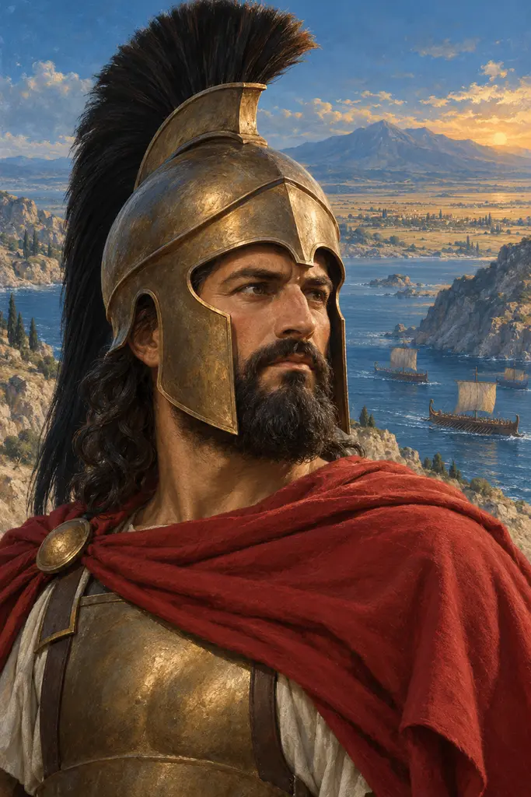
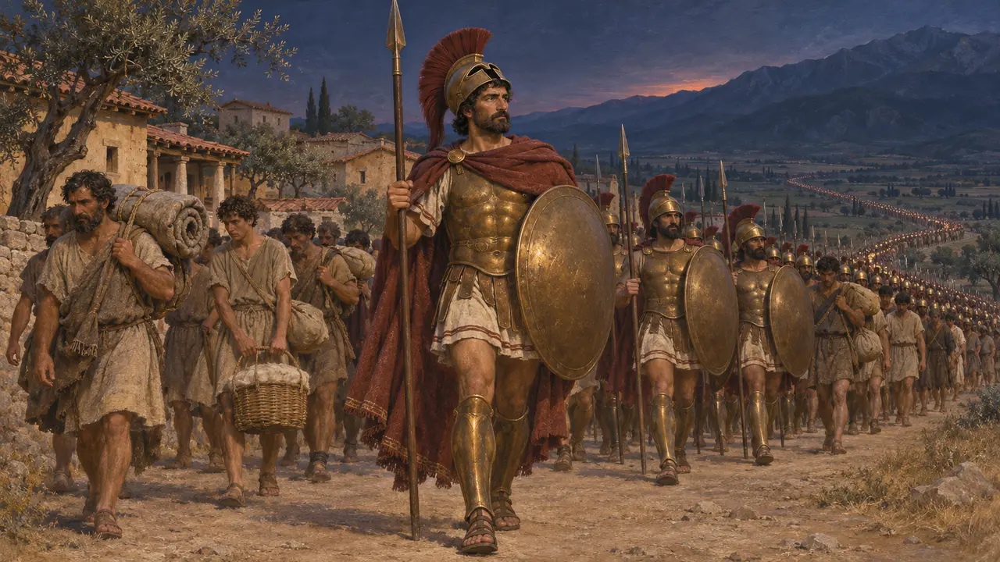
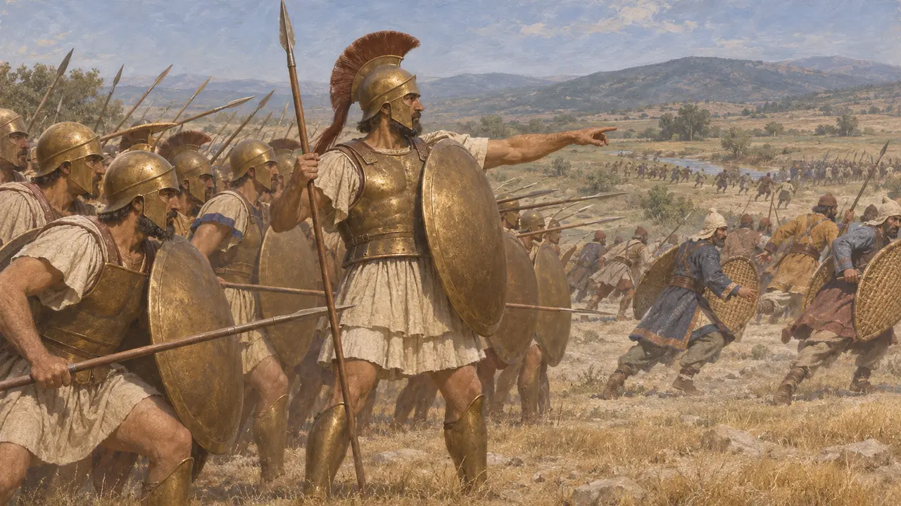
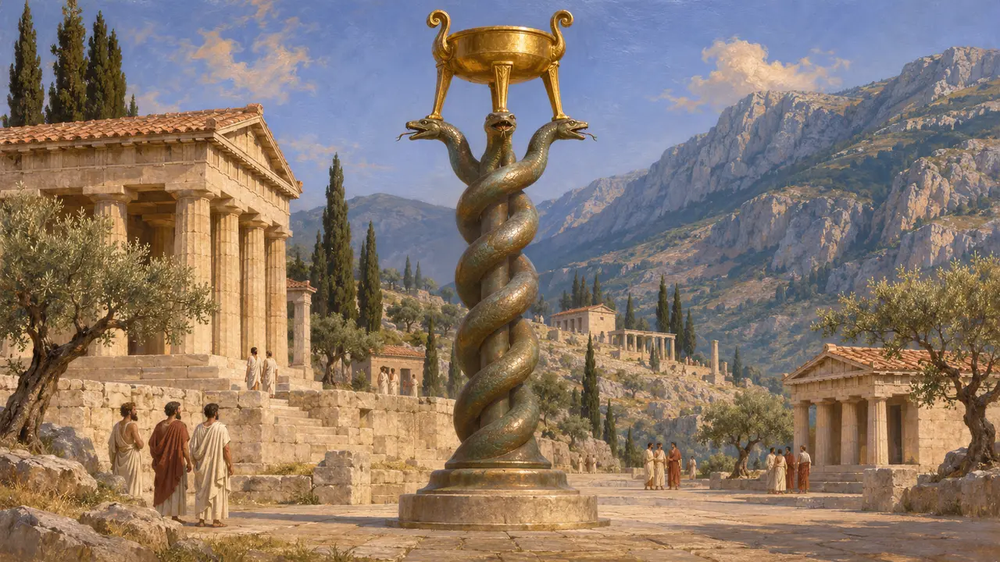
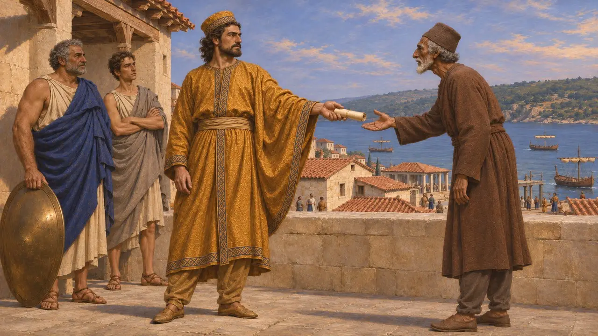
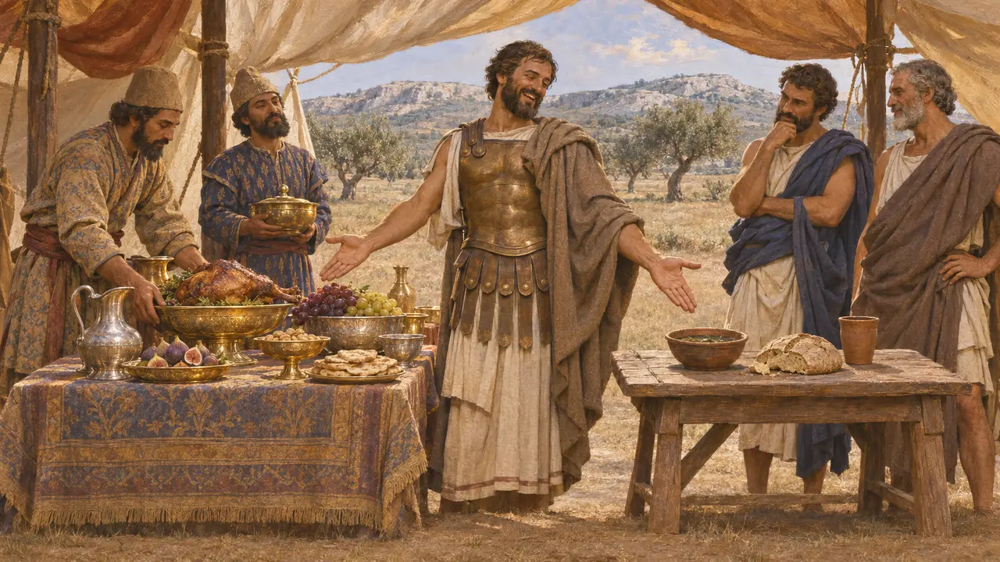

Павсаний
Спартанский регент, возглавивший греческое войско при Платеях в 479 г. до н. э.; умер около 470 г. до н. э.
В игре: Уровень 11: Финал
Павсаний, сын Клеомброта, был регентом Спарты при своём малолетнем двоюродном брате Плистархе, сыне Леонида. В 479 году до н. э. он командовал союзным греческим войском, которое разбило Мардония при Платеях и положило конец персидскому сухопутному вторжению в Грецию. Не прошло и десяти лет, как его обвинили в сговоре с Ксерксом и уморили голодом в спартанском святилище.
В игре: Летопись игры называет его регентом при малолетнем сыне Леонида и командующим крупнейшим греческим войском при Платеях. Это согласуется с Геродотом, хотя численность войска известна лишь по его цифрам.

Регент при малолетнем царе
Античное свидетельствоПо словам Геродота, Павсаний был сыном Клеомброта и, следовательно, племянником Леонида, павшего при Фермопилах. Поскольку сын Леонида Плистарх был ещё ребёнком, Павсаний стал его опекуном и принял командование. Геродот сообщает, что Спарта под давлением афинян ночью выслала 5000 спартиатов, каждого с семью илотами-прислужниками.
Herodotus 9.10-11

Полководец при Платеях
Античное свидетельствоГеродот насчитывает на греческой стороне 38 700 гоплитов и около 110 000 воинов в целом. Многие историки считают число гоплитов в общем правдоподобным, но сомневаются в столь большом количестве легковооружённых и илотов. После нескольких дней манёвров у Асопа беспорядочный ночной отход оставил спартанцев и тегейцев без прикрытия. Мардоний атаковал, был убит, и его войско обратилось в бегство.
Herodotus 9.28-64

Змеиная колонна
Свидетельства эпохиИз добычи, взятой при Платеях, греки посвятили в Дельфах золотой треножник на бронзовой колонне из трёх переплетённых змей. На её кольцах начертаны названия греческих государств, сражавшихся с персами, но ни один полководец не назван. Бронзовая колонна, хоть и повреждённая, до сих пор стоит на месте древнего ипподрома в Стамбуле.
R. Meiggs and D. Lewis, A Selection of Greek Historical Inscriptions, no. 27

Византий и обвинение в мидизме
СпорныйФукидид пишет, что Павсаний велел вырезать на дельфийском треножнике хвастливую надпись со своим именем, а в Византии носил персидское платье и писал Ксерксу, предлагая подчинить ему Грецию. Отозванный, он укрылся в храме Афины Меднодомной, был там замурован и вынесен оттуда, лишь когда умирал от голода. Историки до сих пор спорят, были ли письма подлинными или обвинения родились из спартанской и афинской политической борьбы.
Thucydides 1.128-134

Два пира
Позднейшая легендаГеродот рассказывает, что после битвы Павсаний велел поварам Мардония приготовить персидский пир рядом с простой спартанской трапезой и посмеялся над тем, что столь богатые люди пришли грабить столь бедных. В том же духе он, говорят, отверг совет надругаться над телом Мардония. Оба рассказа читаются как нравоучения, обработанные рассказчиком.
Herodotus 9.78-82
Источники
- Herodotus, Histories, book 9
- Thucydides 1.94-95, 1.128-134
- R. Meiggs and D. Lewis, A Selection of Greek Historical Inscriptions, 1969
- J. F. Lazenby, The Defence of Greece 490-479 BC, 1993
- P. Briant, From Cyrus to Alexander, 2002